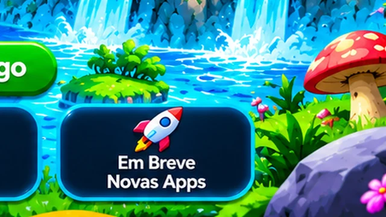
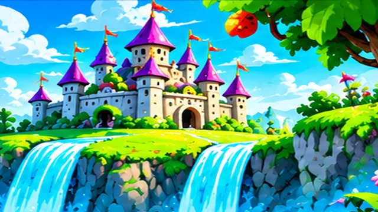
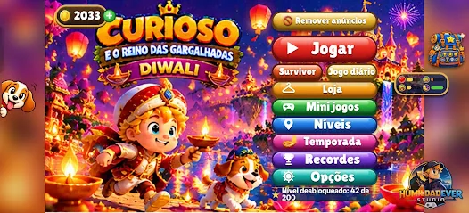

O Curioso
O protagonista que atravessa o reino para recuperar a Grande Gargalhada.
O Rei Rabugento roubou a Grande Gargalhada. Acompanha O Curioso numa aventura de plataformas 2D para devolver a alegria ao reino.

Abre cada mundo para ver a respetiva ilustração conceptual.




O protagonista que atravessa o reino para recuperar a Grande Gargalhada.
O antagonista que roubou a Grande Gargalhada.
Começa pelo primeiro nível. Experimenta os botões ou o joystick e ajusta o tamanho dos controlos nas opções. Usa o salto duplo para atravessar plataformas mais afastadas. Em cada nível, podes ganhar estrelas ao terminar, ao encontrar as três gargalhadas perdidas e ao completar o percurso rapidamente.
Entre os chefes estão o Tronco Zangado, o Faraó Mumificado e a Nuvem Trovão. Ao atravessar os mundos, encontra também lava que sobe, gelo escorregadio, rajadas de vento e plataformas que caem.
Este vídeo é material promocional ilustrado. Vê também as capturas da ficha oficial do jogo.
Mais vídeos no YouTube do estúdioO estúdio publica o jogo para Android na Google Play.
Consulta as notas desta página e as novidades do estúdio.
Notas de lançamento · Novidades do estúdioAo reportares um problema, indica o modelo do dispositivo, a versão do Android, a versão do jogo e os passos até ao erro.
Contactar apoioO kit de arquivo inclui o logótipo e arte promocional. Para o estado atual do jogo, consulta a ficha na Google Play.
Descarregar kit de imprensa (ZIP)Quatro capturas de jogabilidade e uma imagem do menu, retiradas da ficha oficial do jogo. Ver ficha na Google Play.



A primeira atualização registada na ficha apresenta a versão inicial do jogo, com exploração do reino, recolha de moedas, chefes e minijogos.
Ver ficha na Google Play